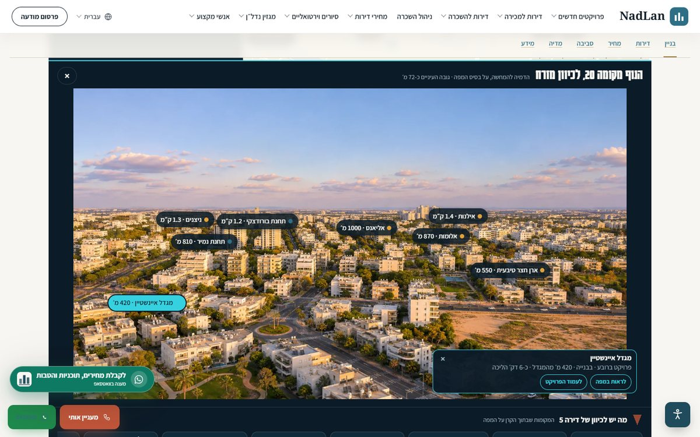
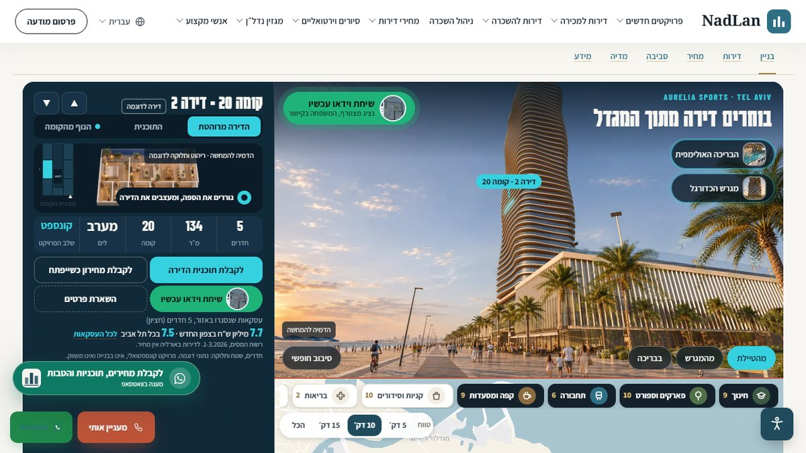
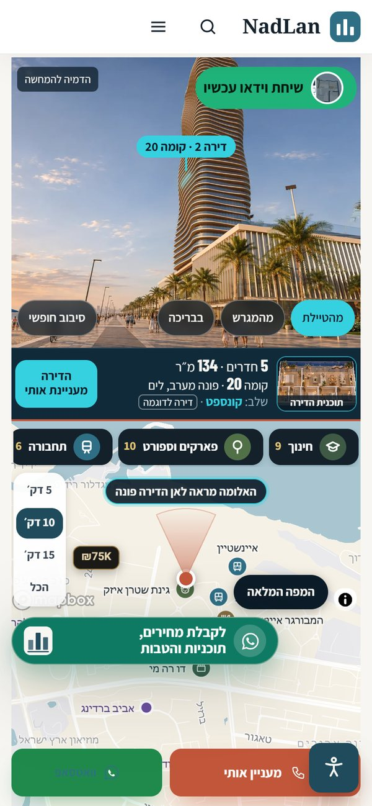
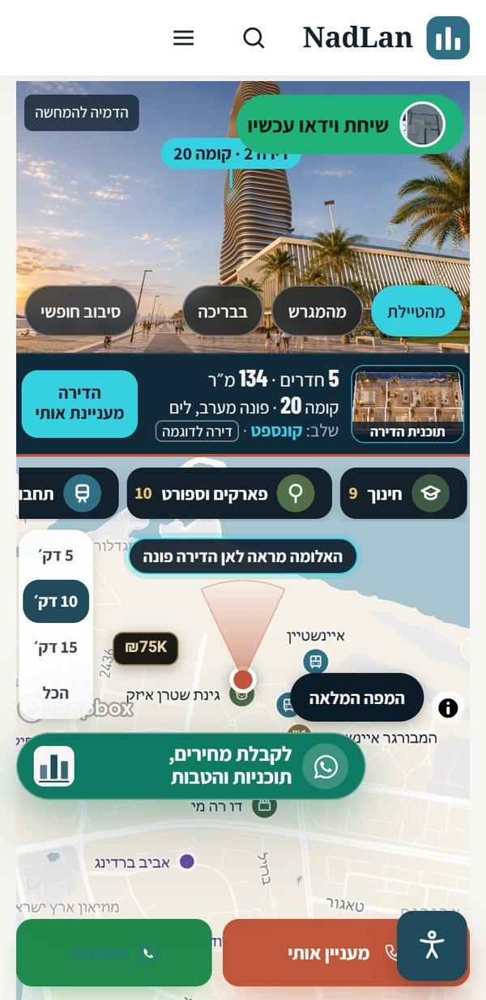
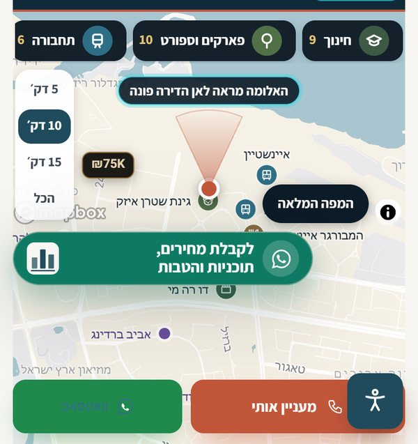
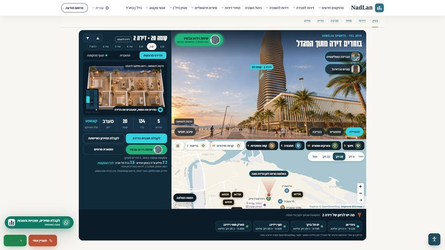

אולם התצוגה של אורליה
כל מסגרת כאן צולמה מהקוד האמיתי, על העמוד החי עם הקוד החדש מוזרק (טלפון 390 על 844, ושולחן 1440). נוגעים במרפסת, האלומה על המפה פונה מיד לכיוון החלון, הדירה נשלפת מהמגדל ונפתחת לתוכנית, ונוחתים בקוקפיט במסך אחד, בלי גלילה ובלי כרטיסים.
הנוף בגדול בשולחן, והפסים של האתר לא חותכים טקסט
צולם מהקוד החדש על העמוד החי (טלפון 360 ו-390, שולחן 1280 על 720, 1440 על 900 ו-1920 על 1080). אותה פלטה ואותן אותיות: כחול ים עמוק, טורקיז הבריכה, אלומת הטרקוטה של המפה, Karantina ו-Assistant, מהבריכה ומלוח התוצאות של המגרש, לא מראה ברירת מחדל.



01 · טלפון 390המפה ממשיכה מתחת לפסים עד תחתית המסך: שום שורה של "מה יש לכיוון" לא מציצה חצי מתחת לוואטסאפ.
02 · טלפון 360אותו דבר במסך הקטן. כפתור "המפה המלאה" ולוגו המפה נשארים בחלק שמעל הפסים.
03 · תגי מחירתג מחיר לא עולה על תחנה או על סימון מקום: זז הצידה, ואם אין לו מקום הוא מחכה. מתחת לפסים אין תגים.
04 · שולחן 1920כל חלק של אולם התצוגה יכול לנוח במלואו בין הכותרת של האתר לבין הפסים שלו.הסבב שאחרי 1.72.758: עובדות מיד, המפה שלו נקייה, הפסים של האתר לא מכסים
צולם מהקוד החדש על העמוד החי (טלפון 360 על 740 ו-390 על 844, שולחן 1440 על 900). אותה פלטה: כחול ים עמוק, טורקיז של הבריכה, אלומה בצבע הטרקוטה של המפה; Karantina לכותרות ו-Assistant לטקסט. לא מראה ברירת מחדל: הצבעים והאותיות לקוחים מהבריכה ומלוח התוצאות של המגרש.
 01 · טלפון 360נגיעה: המגדל, פס העובדות (חדרים, מ״ר, קומה, כיוון, שלב) עם התוכנית והבקשה, ו-200 פיקסלים של המפה מעל פס הוואטסאפ.
01 · טלפון 360נגיעה: המגדל, פס העובדות (חדרים, מ״ר, קומה, כיוון, שלב) עם התוכנית והבקשה, ו-200 פיקסלים של המפה מעל פס הוואטסאפ. 02 · יוצאת מהמרפסתפרוסת החזית עצמה יוצאת מהקומה, ונשאר שקע כהה במגדל.
02 · יוצאת מהמרפסתפרוסת החזית עצמה יוצאת מהקומה, ונשאר שקע כהה במגדל. 03 · בדרך לפסהופכת לנפח זכוכית ומסתובבת. "דילוג" יושב במקום הנחיתה, לא על התווית ולא על השיחה.
03 · בדרך לפסהופכת לנפח זכוכית ומסתובבת. "דילוג" יושב במקום הנחיתה, לא על התווית ולא על השיחה. 04 · נפתחת לדירה המרוהטתנוחתת בתמונה של הפס. כ-1.2 שניות, בלי חסימת גלילה.
04 · נפתחת לדירה המרוהטתנוחתת בתמונה של הפס. כ-1.2 שניות, בלי חסימת גלילה. 05 · טלפון 390"האלומה מראה לאן הדירה פונה" מעל האלומה, ונעלמת בנגיעה הראשונה במפה.
05 · טלפון 390"האלומה מראה לאן הדירה פונה" מעל האלומה, ונעלמת בנגיעה הראשונה במפה. 06 · המפה הקטנהכל סימון עם שם או שלא מצויר; תגי המחיר לא עולים זה על זה.
06 · המפה הקטנהכל סימון עם שם או שלא מצויר; תגי המחיר לא עולים זה על זה.


מהמגדל אל הקוקפיט, בטלפון
 01 · המגדלארבע נקודות מבט. המתקנים פועמים מבחוץ. כל הקומות לחיצות, דירה לכל כיוון.
01 · המגדלארבע נקודות מבט. המתקנים פועמים מבחוץ. כל הקומות לחיצות, דירה לכל כיוון. 02 · נגיעההמרפסת נדלקת, האלומה על המפה פונה מיד לכיוון החלון. קומה למעלה ולמטה באגודל.
02 · נגיעההמרפסת נדלקת, האלומה על המפה פונה מיד לכיוון החלון. קומה למעלה ולמטה באגודל. 03 · המצלמה נכנסתאותה תמונה, זום אל הדירה, המגדל מתעמעם.
03 · המצלמה נכנסתאותה תמונה, זום אל הדירה, המגדל מתעמעם. 04 · הדירה יוצאתנפח זכוכית מואר עוזב את החזית.
04 · הדירה יוצאתנפח זכוכית מואר עוזב את החזית. 05 · מסתובבתמסתובב, הגג נעלם.
05 · מסתובבתמסתובב, הגג נעלם. 06 · נפתחתהתוכנית במידות של הדירה, המרפסת לכיוון שממנו באה.
06 · נפתחתהתוכנית במידות של הדירה, המרפסת לכיוון שממנו באה. 07 · הקוקפיטהנוף מהקומה, המפה עם האלומה, 9 מסכי החלטה, שיחת וידאו, סל, פרטים. מסך אחד.
07 · הקוקפיטהנוף מהקומה, המפה עם האלומה, 9 מסכי החלטה, שיחת וידאו, סל, פרטים. מסך אחד. 08 · התוכניתתוכנית לדוגמה, ומשם ישר למעצב הדירה.
08 · התוכניתתוכנית לדוגמה, ומשם ישר למעצב הדירה. 09 · הנוף מכל קומהעל מפת העיר האמיתית, מגובה העיניים של הקומה. חמש קומות למעלה ולמטה, וכל כיוון.
09 · הנוף מכל קומהעל מפת העיר האמיתית, מגובה העיניים של הקומה. חמש קומות למעלה ולמטה, וכל כיוון. 10 · שמש ורוחשעות שמש על החזית ביוני, במרץ ובדצמבר. משם לכלי שמש ורוח.
10 · שמש ורוחשעות שמש על החזית ביוני, במרץ ובדצמבר. משם לכלי שמש ורוח. 11 · מחירים באזורעסקאות שנסגרו, חציון לפי חדרים, מקור ורבעון. לאורליה אין מחיר.
11 · מחירים באזורעסקאות שנסגרו, חציון לפי חדרים, מקור ורבעון. לאורליה אין מחיר. 12 · המתקניםבריכה, מגרש, אולם, מסלול. מידות לפי התקן, כל אחד עולם משלו.
12 · המתקניםבריכה, מגרש, אולם, מסלול. מידות לפי התקן, כל אחד עולם משלו.משך השליפה: כ-2.3 שניות, נגיעה מדלגת, ובמצב "הפחתת תנועה" מעבר קצר בלבד. רק טרנספורמציות ושקיפות, בלי ספרייה ובלי קובץ כבד: הקוד כולו כ-45 ק"ב.
שלוש דרכים להחזיק הכל בעין אחת
א+ב: אלומה בנגיעה, שליפה לקוקפיט
הנגיעה הראשונה לא מוציאה את הקונה מהמגדל: המרפסת נדלקת, המפה עם האלומה נצמדת לבמה, והכפתור "פתיחת הדירה" יושב באזור האגודל. הנגיעה השנייה שולפת אל קוקפיט במסך מלא: הנוף והמפה למעלה, 9 מסכי החלטה באמצע, הסרגל למטה.
למה: העין נשארת על הדירה שנבחרה (האלומה צמודה לבמה, לא עשר קומות למטה), שתי נגיעות בלבד עד הקוקפיט, וכל מסך החלטה במרחק נגיעה אחת וחוזר לדירה. נבדק: הקוקפיט נכנס במסך 390 על 844 בלי גלילה ובלי פס גלילה פנימי.
ג: גיליון שעולה מעל המגדל
כמו הגיליון של כיכר המדינה (70 פיקסלים מציצים, 43% פתוח). טוב לרשימות, אבל בטלפון הוא מסתיר את המגדל ואת האלומה בדיוק כשהקונה רוצה לראות לאן הדירה פונה, ומחזיר את התחושה של כרטיס בתוך כרטיס. לא נבנה לאורליה.
ד: מסכי החלטה בהחלקה
מסכים מלאים אחד ליד השני בהחלקה ימינה ושמאלה. יפה בהדגמה, אבל קונה לא יודע כמה מסכים יש ומה בהם, וההחלקה מתנגשת בגלילת העמוד. האריחים של הקוקפיט מראים את כל תשעת המסכים בבת אחת, וכל מסך נפתח בנגיעה וחוזר בחץ או בכפתור "חזרה" של הטלפון.
בשולחן: המגדל, ואז הקוקפיט ליד הנוף


אותם רגעים, זה ליד זה


השורות שבהן הם מובילים
| מה | היום אצלנו | איך עוברים אותם |
|---|---|---|
| הליכה מרוהטת בתוך הדירה | שלב 2 | הליכות ג'יני מוקלטות מתמונת פתיחה של הדירה של אורליה, עם נקודות בחירה (סלון, מרפסת לים, מטבח, חדר), תפורות לסיבוב אחד, ומשם למעצב שבו הקונה מזיז קירות. אצלם הפנים קבוע. |
| מראה החוץ | חי בשלב 1 | תמונות פוטוריאליות מאותה מצלמה של בלנדר, עם שכבת בחירה מדויקת לכל מרפסת, בכמה מאות ק"ב ולא 88 מ"ב. |
| סטטוס דירות על החזית | חי, נתוני דוגמה | סטטוס לכל דירה מסומן "נתוני דוגמה" עד שיזם אמיתי מזין; אותו מבנה נתונים יקבל הזנה חיה. |
| שריון ומקדמה | קיים באתר | הסל שלי ומסלול השריון עם עורך דין קודם (חוק המכר), מקדמה מדומה בלבד עד יזם. אצלם הכסף לפני עורך הדין. |
| פאנל ניהול | חלקי | היזם מעדכן בוורדפרס בעברית; התראות לבעלים כבר קיימות. |
| נוף מכל דירה | חי בשלב 1 | אצלם תמונת רחפן אחת לגובה; אצלנו מצלמה בגובה העיניים של כל קומה ובכל כיוון, על מפת העיר. |
| שמש | חי בשלב 1 | להם אין בכלל. אצלנו שעות שמש על החזית לכל דירה, ומשם לכלי שמש ורוח. |
החיבורים בקוקפיט לשאר החבילות
2 · בפנים ובמתקנים
אריח "להיכנס לדירה" נכנס לראש הקוקפיט, וכל מתקן במסך המתקנים מקבל "להיכנס" עם ההליכה התפורה.
4 · שיחה שפורצת
כבר חי בבנייה הזו: הכפתור הראשי והאריח "וידאו עם המשפחה" פותחים מיד את שיחת הווידאו האמיתית של מעצב הדירות, הבעלים מקבל מייל עם קישור הצטרפות, והמשפחה נכנסת בקישור. בורר התאריכים הוחלף באורליה בפס "שיחת וידאו עכשיו".
5 · מפרט, הצעה, רהיטים
אריח "לעצב את הדירה" מוביל למעצב עם הדירה; המפרט והרהיטים יתחברו לשם ולסל.
6 · הסביבה
אריח "הסביבה" קופץ לחלק הסביבה בעמוד; כשהעמוד המפורט יהיה מוכן, האריח יפתח אותו בתוך הקוקפיט.
7 · רשת וקמפיין
"השארת פרטים" ממלא בטופס את הדירה שנבחרה; ההצטרפות לקהילת הפרויקט תשב באותו סרגל.
8 · סרט
השליפה מוקלטת כבר עכשיו מהעמוד (הסרטון למעלה) ומוכנה לעריכה.
מה עוד לא
- לא נבדק עדיין על טלפון אמיתי: רק דפדפן אמיתי בגודל 390 על 844.
- הנוף מכל קומה בנוי על מפת העיר של Mapbox: הבניינים מוצגים כנפחים פשוטים בשעת דמדומים, לא תמונה. התמונה הפוטוריאלית לכל גובה וכיוון תבוא מתמונות הפתיחה של ג'יני.
- התוכנית היא תוכנית לדוגמה מהמידות והכיוון של הדירה, לא תוכנית אדריכל. חדרים וזמינות: נתוני דוגמה.
- במבט מהים המגדל נראה כקופסה, ובשאר המבטים בגלים: חוסר עקביות בתמונות שעוד צריך לתקן.
- שיחת הווידאו: אם אף אחד מאיתנו לא מצטרף, ההצעה להשאיר פרטים מופיעה בפס בעמוד, לא בתוך השיחה עצמה (השיחה של המעצב משותפת לכל האתר ולא שונתה).
- הליכות ג'יני ואולפן השידור: עוד לא.